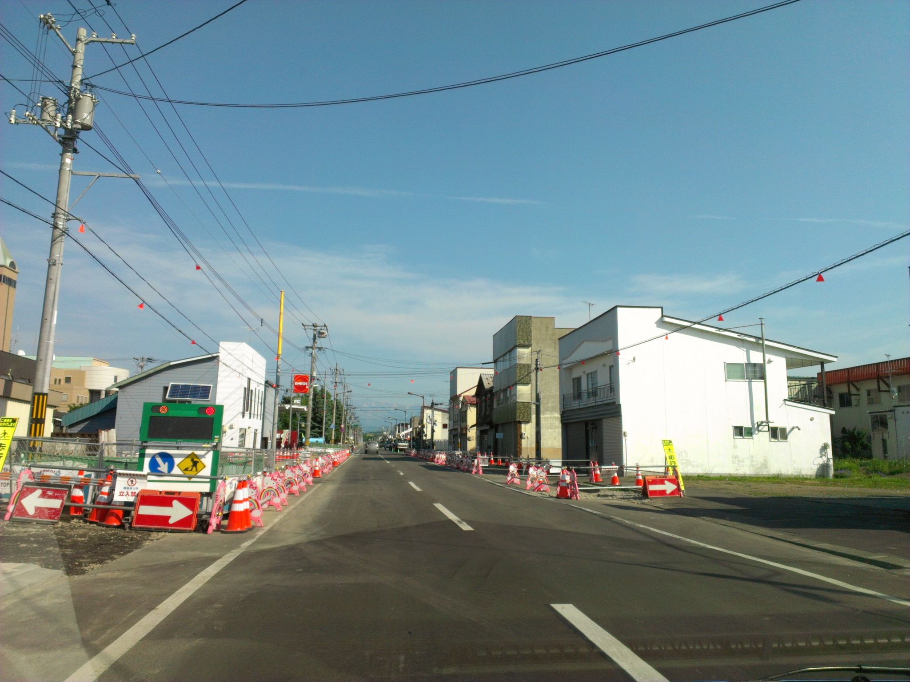

Seed
- Two rows of red-and-white striped traffic cones flanking both sides of the road, funneling the lane into a narrowed corridor
- A solar-panel-topped portable arrow board, rectangular green housing, pointing left with a crude pictographic pedestrian
- Red pennant flags strung along the overhead wires like faded bunting — festival or warning, impossible to tell from here
Wander
The cones keep going. They repeat past the point where anyone needs to be told. I notice that the cone, as an object, is one of the few pieces of public design that has no "off" state — it is always shouting, always fluorescent, never asked to be subtle. Which makes it a kind of typographic all-caps: it cannot whisper, so it has evolved to mean "caution" only through sheer sustained volume. Compare that to the Japanese *kōji-chū* barricade, the ones with the little animated bowing construction workers or the waving cartoon monkeys — a culture that decided, at some point, that even the most aggressive signal could be softened by character, that a warning could apologize for itself. There's a whole design thesis buried in that: the Dutch woonerf solves the same problem (slow down, be careful) by removing signage entirely and making the street *feel* ambiguous, so your body slows before your mind catches up. Three strategies for the same message — shout, apologize, withhold — and each produces a different citizen. The cone-shout citizen learns to tune out; the bowing-monkey citizen learns that the state is embarrassed on their behalf; the woonerf citizen learns to read the ground. I wonder if you could map interfaces the same way. iOS is bowing monkeys. Brutalist web is cones. A really good native Mac app from 2005 was a woonerf — nothing told you what to do and somehow you knew.
Branch
The pennant flags strung between poles — red triangles in a line — as the oldest form of temporal signal: "something is happening here, today only." Worth chasing.
Chose A
Pushing further into the cone corridor keeps me inside the apparatus of temporary signals — good material for the pennant-flag branch about "today only" markings, and the repetition itself might press the thought somewhere unexpected.